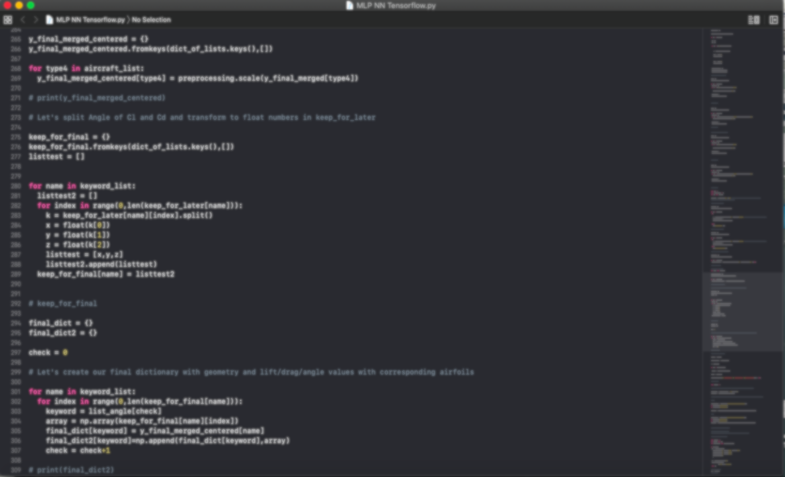

SURE MLP NN Project
Summer Undergraduate Research in Engineering at McGill (2020): Gradient-enhanced MLP Neural Network coupled with in-house numerical code to predict aerodynamic coefficients and their spatial derivatives for given airfoil and flow conditions. Demonstrated faster training than standard MLP NN thanks to the duality of the signal being fedforward and backpropagated. Use of Python for coding and Xfoil for populating the database. Poster presented to research faculty & students.